📖 ЛЕКЦИЯ 1. ОСНОВЫ HTML: СТРУКТУРА, СИНТАКСИС, КЛЮЧЕВЫЕ ЭЛЕМЕНТЫ
- Определение HTML, история создания и область применения
- Обязательные структурные элементы и их назначение
- Понятие тега и атрибута. Классификация тегов
- Теги форматирования, списков, таблиц, ссылок, изображений
- Подключение JavaScript и метатеги
- Семантическая разметка и доступность
1.1 Определение HTML, история и применение
HTML (HyperText Markup Language) — стандартный язык разметки документов во Всемирной паутине. Это не язык программирования, а язык разметки, который описывает структуру и семантику контента.
HTML интерпретируется браузером и отображается в виде документа, удобного для восприятия человеком. Браузер читает теги и строит на их основе объектную модель документа (DOM), которую затем можно стилизовать и модифицировать.
Язык был разработан британским учёным Тимом Бернерсом-Ли в 1991-1992 годах в Европейском совете по ядерным исследованиям (ЦЕРН, Женева). Первоначальная цель — упростить обмен научной документацией между исследователями по всему миру.
Решение проблемы сложности языка SGML достигалось путём определения небольшого набора структурных и семантических элементов — дескрипторов (тегов). Это сделало язык доступным для людей без глубоких технических знаний.
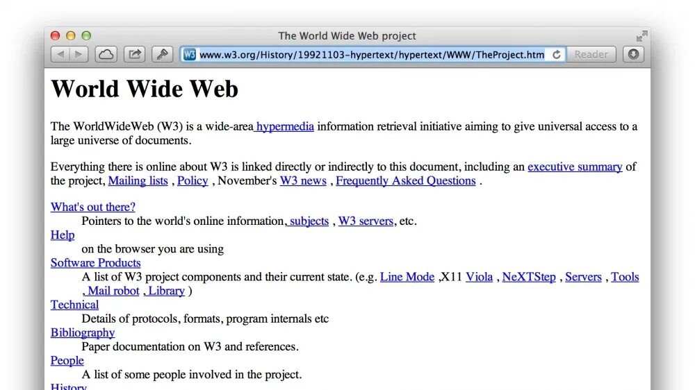
Ключевые возможности современного HTML5:
- ✅ Создание структурированного, семантически правильного документа
- ✅ Реализация гипертекстовых переходов (ссылки)
- ✅ Встраивание мультимедиа: изображения, аудио, видео, SVG
- ✅ Создание таблиц, списков, форм для ввода данных
- ✅ Форматирование без жёсткой привязки к отображению
- ✅ Совместимость с любым устройством и браузером
- ✅ Интеграция с CSS для стилизации и JavaScript для интерактивности
- ✅ Поддержка доступности (accessibility) для скринридеров
1.2 Обязательные структурные элементы
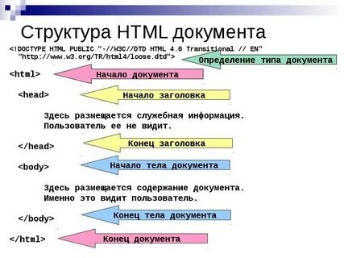
| Тег | Назначение | Пример |
|---|---|---|
<!DOCTYPE html> | Декларация стандарта (обязателен) | Включает режим стандартов браузера |
<html lang="ru"> | Корневой контейнер всего документа | lang помогает поисковикам и скринридерам |
<head> | Метаданные: кодировка, SEO, стили, скрипты | Не отображается на странице |
<meta charset="UTF-8"> | Кодировка для поддержки всех языков | Обязателен для кириллицы |
<title> | Заголовок вкладки и результаты поиска | Важно для SEO |
<body> | Всё видимое пользователю содержимое | Текст, изображения, видео |
<h1>...<h6> | Заголовки разного уровня (иерархия) | h1 — главный, h6 — самый мелкий |
<p> | Абзац текста (блочный элемент) | Автоматические отступы сверху/снизу |
<header>, <main>, <footer> | Семантические разделы страницы | Улучшают доступность и SEO |
1.3 Понятие тега и атрибута
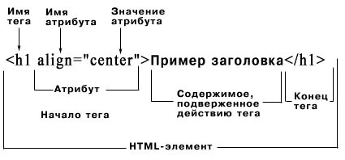
Тег (дескриптор) — базовый элемент языка разметки, заключённый в угловые скобки < >. Текст между открывающим и закрывающим тегами получает определённое форматирование или смысловую нагрузку.
Классификация тегов:
- Парные теги: имеют открывающую и закрывающую часть:
<p>Текст</p>,<div>...</div> - Одиночные (пустые) теги: не имеют закрывающей части:
<img>,<br>,<hr>,<input>,<meta>
Атрибут — дополнительное свойство тега, задающее параметры его поведения или внешнего вида. Записывается внутри открывающего тега в формате имя="значение".
Нечисловые значения атрибутов обязательно заключаются в кавычки (одинарные или двойные). Теги и атрибуты в HTML5 нечувствительны к регистру, но стандартом считается нижний регистр.
1.4 Основные группы тегов
📋 Списки
HTML поддерживает три типа списков:
Атрибут type позволяет менять стиль маркеров: type="square", type="I" (римские цифры), type="A" (буквы).
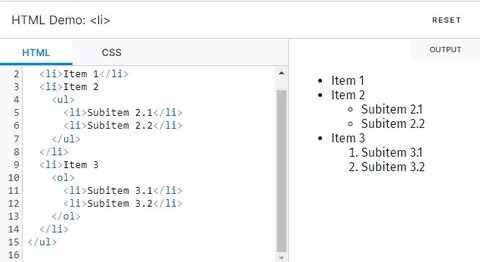
🔗 Гиперссылки
Гиперссылки создаются парным тегом <a> (anchor). Атрибут href указывает адрес перехода.
Ключевые атрибуты <a>:
href— адрес перехода (обязательный)target="_blank"— открыть в новой вкладкеtitle— всплывающая подсказка при наведенииrel="noopener noreferrer"— безопасность при target="_blank"
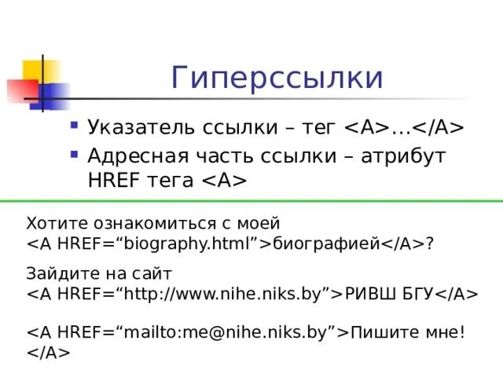
🖼️ Изображения
Изображения вставляются одиночным тегом <img>. Поддерживаемые форматы: GIF, JPEG, PNG, WebP, SVG.
Важные атрибуты:
src— путь к файлу (относительный или абсолютный)alt— альтернативный текст (обязателен для доступности и SEO)width/height— размеры (предотвращают сдвиг макета при загрузке)loading="lazy"— отложенная загрузка (улучшает производительность)
📊 Таблицы
Таблицы создаются для представления табличных данных (не для макета!).
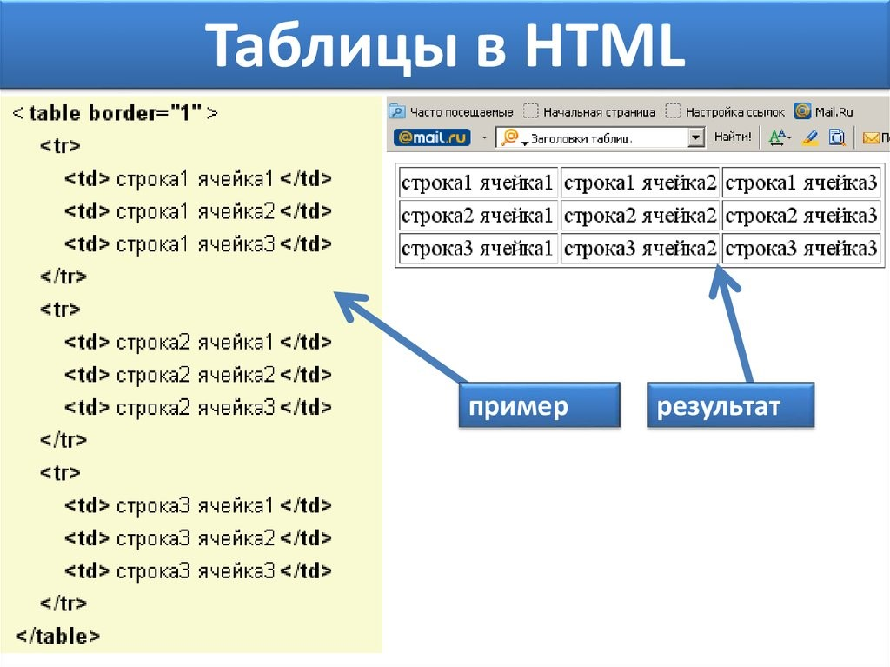
Ключевые теги: <table>, <tr> (строка), <th> (заголовок), <td> (ячейка), <caption> (подпись), <thead>, <tbody>, <tfoot>.
Атрибуты объединения: colspan="N" — объединение по горизонтали, rowspan="N" — по вертикали.
⚡ Подключение JavaScript и метатеги
Для добавления интерактивности используется тег <script>.
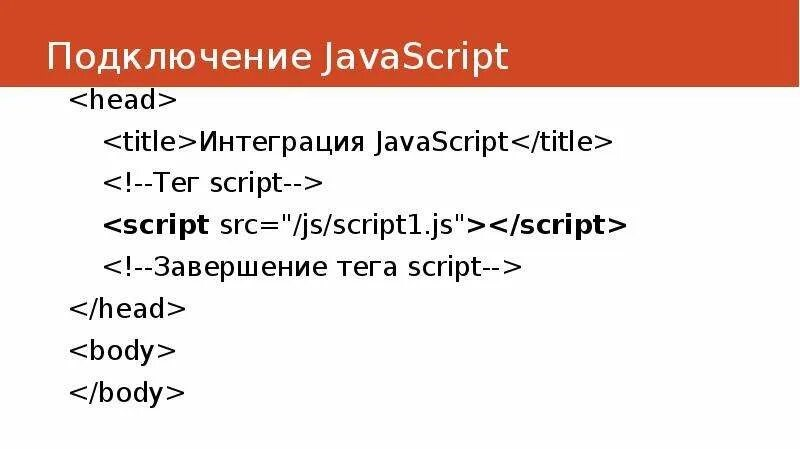
Важные метатеги в <head>:
1.5 Семантическая разметка и доступность
Семантические теги (<header>, <nav>, <main>, <article>, <section>, <aside>, <footer>) делают код понятнее для разработчиков, поисковиков и скринридеров.
alt к изображениям, используйте семантические теги, проверяйте контрастность цветов и поддерживайте навигацию с клавиатуры.
🎯 Вывод по лекции
Вы изучили историю и назначение HTML, освоили обязательную структуру документа, научились работать с тегами, атрибутами, списками, таблицами, ссылками и изображениями. Вы поняли важность семантики и доступности. Эти знания — фундамент для изучения каскадных таблиц стилей (CSS) и языка программирования JavaScript, которые превратят статичную разметку в красивый и интерактивный веб-интерфейс.
🛠️ ПРАКТИКА 1: Основы HTML
🎯 Цели практики:
- Научиться создавать базовую структуру HTML-документа
- Освоить основные теги форматирования текста
- Научиться создавать списки различных типов
- Освоить вставку гиперссылок и изображений
- Научиться создавать и форматировать таблицы
- Освоить подключение JavaScript к HTML-странице
📋 Задания:
- Создайте HTML-документ с правильной структурой:
<!DOCTYPE html>,<html>,<head>,<body>. В секции<head>укажите кодировку UTF-8 и заголовок страницы "Моя первая веб-страница". - В теле документа создайте заголовок первого уровня
<h1>с текстом "Добро пожаловать на мою страницу" и заголовок второго уровня<h2>с текстом "Мои первые шаги в HTML". - Создайте абзац
<p>с произвольным текстом из 3-4 предложений. Внутри абзаца выделите одно слово жирным с помощью<strong>, одно слово курсивом с помощью<em>и одно слово подчёркнутым с помощью<u>. - Добавьте ещё один абзац, в котором используйте тег
<br>для переноса строки внутри абзаца (не менее трёх переносов). Создайте горизонтальную линию с помощью тега<hr>между абзацами. - Создайте раздел с формулами. Используя
<sub>, напишите формулу воды (H₂O). Используя<sup>, напишите формулу биквадратного уравнения (ax⁴ + bx² + c = 0). - Создайте маркированный список
<ul>с тремя вашими любимыми книгами или фильмами. Каждый элемент списка должен быть обёрнут в<li>. - Создайте нумерованный список
<ol>с пошаговой инструкцией "Как приготовить утренний кофе" (минимум 5 шагов). - Создайте вложенный список. Основной список — нумерованный (дни недели). Внутри понедельника и среды создайте маркированный список дел на эти дни (минимум 3 дела для каждого дня).
- Вставьте изображение с помощью тега
<img>. Используйте любую картинку из интернета (укажите реальный URL). Обязательно добавьте атрибуты alt="Описание картинки", width="300" и height="200". - Создайте гиперссылку на сайт google.com с текстом "Перейти в Google". Добавьте атрибут target="_blank", чтобы ссылка открывалась в новой вкладке.
- Создайте ссылку-якорь: вверху страницы добавьте ссылку "Перейти вниз", а внизу страницы — ссылку "Наверх", при клике на которые страница прокручивается к соответствующей позиции.
- Создайте изображение-ссылку. Оберните тег
<img>в тег<a>так, чтобы клик по картинке вёл на сайт YouTube. - Создайте таблицу 3×3 (3 строки, 3 ячейки) с заголовками "Имя", "Возраст", "Город". Заполните таблицу данными трёх вымышленных людей. Используйте теги
<table>,<tr>,<td>,<th>. - Добавьте в эту же таблицу строку с объединением двух ячеек по горизонтали (атрибут colspan="2"). Объединённая ячейка должна содержать текст "Всего: 3 человека".
- Создайте отдельную таблицу расписания уроков (минимум 4 предмета). Таблица должна иметь:
- подпись
<caption>"Моё расписание" - заголовочные ячейки
<th>для столбцов "Время", "Предмет", "Кабинет" - атрибуты border="1", cellpadding="5", cellspacing="0"
- фоновый цвет для строки-заголовка с помощью атрибута bgcolor
- подпись
- Используя теги таблицы, создайте таблицу 2×2, в которой левая верхняя ячейка объединена по вертикали с левой нижней (атрибут rowspan="2"). Заполните ячейки любым текстом.
- Внизу страницы создайте блок
<div>с произвольным текстом. Внутри блока используйте:<span style="color: red;">для красного текста<mark>для подсветки текста<small>для текста меньшего размера<del>для зачёркнутого текста
- Создайте три различных типа списков на одном уровне:
- маркированный список с квадратными маркерами (атрибут type="square")
- нумерованный список с римскими цифрами (атрибут type="I")
- нумерованный список с буквами (атрибут type="A")
- Добавьте на страницу блок с цитатой. Используйте тег
<blockquote>для самой цитаты и тег<cite>для указания автора. Ниже добавьте короткую цитату в строке с помощью тега<q>. - С помощью тегов
<script>добавьте на страницу JavaScript, который:- выводит в консоль сообщение "Страница загружена"
- выводит всплывающее окно alert("Добро пожаловать!") при загрузке страницы
- 🎁 Бонусное задание: Создайте таблицу размером 4×4, в которой первый столбец и первая строка будут заголовочными (с помощью
<th>), а в центральных ячейках будут числа — результат умножения номера строки на номер столбца.
🎨 ЛЕКЦИЯ 2. ОСНОВЫ CSS: СЕЛЕКТОРЫ, БЛОЧНАЯ МОДЕЛЬ, ПОЗИЦИОНИРОВАНИЕ
- Определение CSS, история и роль
- Способы подключения CSS
- Синтаксис и селекторы
- Блочная модель: content, padding, border, margin
- Позиционирование и display
- Практика: 20+ заданий
2.1 Определение и история
CSS (Cascading Style Sheets) — язык описания внешнего вида документа, написанного на HTML. CSS определяет, как элементы должны отображаться на экране, бумаге или в других носителях.
Создатель: Хокон Виум Ли (Håkon Wium Lie) в 1996 году в рамках Консорциума Всемирной паутины (W3C).
Основная проблема, которую решает CSS — разделение структуры документа (HTML) и его представления (цвета, шрифты, расположение). До появления CSS веб-страницы форматировались исключительно с помощью HTML-тегов и атрибутов, что приводило к дублированию кода и сложности поддержки крупных сайтов.
2.2 Способы подключения CSS
✅ Внешний (рекомендуемый). CSS-правила записываются в отдельном файле с расширением .css. Подключение осуществляется через тег <link> в секции <head> HTML-документа: <link rel="stylesheet" href="styles.css">. Преимущества: один CSS-файл обслуживает множество HTML-страниц, упрощается изменение дизайна всего сайта, браузер кеширует файл, ускоряя загрузку последующих страниц.
⚙️ Внутренний способ. CSS-правила записываются внутри тега <style>, который размещается в секции <head> HTML-документа. Не рекомендован для реальных проектов.
🔧 Инлайновый способ. CSS-правила записываются непосредственно в атрибут style HTML-элемента: <p style="color: red;">Текст</p>. Используется только для динамических стилей (например, при изменении через JavaScript) или в исключительных случаях.
2.3 Синтаксис и селекторы
CSS-правило состоит из селектора и блока объявлений. Селектор указывает, к каким элементам применяется правило. Блок объявлений содержит одно или несколько свойств с их значениями, заключённых в фигурные скобки.
Универсальный селектор * применяет правило ко всем элементам документа.
Селектор по тегу применяет правило ко всем элементам с указанным тегом.
Селектор по классу применяется ко всем элементам с указанным значением атрибута class. В CSS перед именем класса ставится точка.
Селектор по ID применяется к элементу с указанным значением атрибута id. В CSS перед идентификатором ставится решётка #. Идентификатор должен быть уникальным на странице.
Псевдоклассы определяют состояние элемента. Примеры: :hover — при наведении курсора, :active — в момент клика, :focus — при фокусе клавиатуры, :first-child — первый дочерний элемент.
2.4 Блочная модель
Каждый элемент HTML представляет собой прямоугольник. Блочная модель описывает составляющие этого прямоугольника:
- Content (содержимое) — область, где находится текст, изображения или другие элементы
- Padding (внутренний отступ) — пространство между содержимым и границей элемента
- Border (граница) — рамка вокруг padding
- Margin (внешний отступ) — пространство между границей элемента и соседними элементами
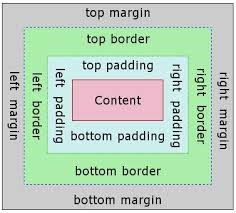
Свойство box-sizing: border-box определяет, как браузер вычисляет ширину и высоту элемента. С этим значением ширина элемента = width (padding и border включены в width). Рекомендуется устанавливать box-sizing: border-box для всех элементов.
2.5 Позиционирование и типы отображения
display — как элемент ведёт себя на странице:
block— ширина всей строки, переносы до и после. Работают ширина, высота, отступы. (<div>,<p>)inline— внутри строки, ширина по тексту. Не работают ширина/высота и вертикальные отступы. (<span>,<a>)inline-block— как inline, но работают ширина, высота и все отступы.none— полностью убирает элемент (место исчезает).
position — как и где расположен элемент:
static(по умолчанию) — обычный поток. top/left не работают.relative— сдвиг относительно своего обычного места. Исходное место не исчезает.absolute— вырывается из потока. Позиционируется относительно ближайшего не static родителя.fixed— привязан к окну браузера, не двигается при прокрутке.sticky— сначала обычный, после прокрутки до границы — приклеивает.
🎯 Вывод по лекции
Вы изучили язык CSS, который отвечает за визуальное оформление веб-страниц и позволяет отделить структуру документа от его представления. Вы освоили различные типы селекторов (тег, класс, идентификатор, псевдоклассы), разобрались с блочной моделью (content, padding, border, margin) и научились управлять позиционированием элементов с помощью свойств display и position. Эти навыки дают вам возможность создавать эстетичные, адаптивные и хорошо структурированные веб-страницы с гибким управлением расположением и отступами элементов.
🎨 ПРАКТИКА 2: Основы CSS
🎯 Цели практики:
- Научиться подключать CSS к HTML-документу тремя способами
- Освоить различные типы селекторов (тег, класс, id, атрибут, псевдоклассы)
- Понять блочную модель и научиться управлять отступами и границами
- Научиться позиционировать элементы с помощью свойств display и position
- Освоить создание адаптивных блоков с использованием box-sizing
📋 Задания:
- Создайте HTML-документ с базовой структурой и подключите к нему внешний CSS-файл (создайте файл styles.css). В секции
<head>добавьте также внутренний стиль для тега<body>(установите семейство шрифтов Arial). - Используя селектор по тегу, задайте для всех заголовков
<h1>синий цвет текста и размер 28px. Для всех абзацев<p>установите размер шрифта 16px и межстрочный интервал 1.5. - Создайте три разных элемента с классом highlight. Через селектор класса задайте для них жёлтый фоновый цвет, внутренний отступ 10px и сплошную оранжевую границу толщиной 2px.
- Создайте элемент с идентификатором main-title. Через селектор id задайте для него зелёный цвет текста, выравнивание по центру и нижнюю границу пунктиром зелёного цвета толщиной 3px.
- Используя селектор по атрибуту, найдите все элементы
<input>с атрибутом type="text" и задайте им ширину 250px, внутренний отступ 8px и серую рамку толщиной 1px. Для всех элементов с атрибутом disabled установите серый фон и непрозрачность 0.6. - Создайте таблицу с 3 строками и 3 столбцами. Используя псевдокласс :hover, сделайте так, чтобы при наведении на строку таблицы её фон менялся на светло-серый. Для первой строки с помощью :first-child задайте жирный шрифт.
- Используя псевдокласс :nth-child(odd), задайте для нечётных строк таблицы серый фон. Для чётных строк через :nth-child(even) задайте белый фон.
- Создайте три блока
<div>с классом box. Через универсальный селектор*установите для всех элементов box-sizing: border-box. Для класса box задайте ширину 200px, высоту 150px, сплошную чёрную границу толщиной 2px, внешний отступ снизу 20px и внутренний отступ 15px. Проверьте, что ширина блока остаётся 200px. - Создайте блок с классом card. Задайте ему ширину 300px, внешний отступ 20px (со всех сторон), внутренний отступ: сверху 20px, справа 15px, снизу 20px, слева 15px. Добавьте тень с помощью box-shadow: 5px 5px 10px rgba(0,0,0,0.3). Внутри блока разместите заголовок и несколько абзацев текста.
- Создайте три блока разного цвета (красный, зелёный, синий) с классом color-block. Используя сокращённую запись margin, задайте первому блоку отступы 10px, второму — 20px 40px, третьему — 5px 10px 15px 20px. Наблюдайте разницу в расположении блоков.
- Создайте кнопку с классом button. Используя сокращённую запись padding, задайте ей внутренние отступы 12px 24px. Установите фоновый цвет #007bff, белый цвет текста, рамку без границ, скругление углов 6px. Добавьте псевдокласс :hover для изменения цвета фона на #0056b3.
- Создайте три элемента
<span>с текстом "Inline элемент". Для них задайте стили: фоновый цвет #f0f0f0, внутренний отступ 5px, внешний отступ 10px (слева и справа). Проверьте, что вертикальные отступы и ширина/высота не работают. Прокомментируйте наблюдаемое поведение. - Создайте три элемента
<div>с классом inline-block-demo. Задайте им свойство display: inline-block, ширину 150px, высоту 100px, фоновый цвет #e0e0e0, внешний отступ 10px и внутренний отступ 8px. Убедитесь, что блоки располагаются в строку, но работают все размеры и отступы. - Создайте элемент с классом relative-box. Задайте ему позиционирование position: relative, смещение top: 20px и left: 30px, фоновый цвет #ffcc00, ширину 300px, внутренний отступ 15px. Рядом создайте обычный блок с текстом. Убедитесь, что исходное место относительного блока сохраняется, а соседний блок не смещается.
- Создайте родительский контейнер с классом parent (ширина 400px, высота 250px, фоновый цвет #f5f5f5, относительное позиционирование). Внутри создайте дочерний блок с классом absolute-child (ширина 120px, высота 80px, фоновый цвет #ff6666, абсолютное позиционирование). Задайте ему смещение bottom: 20px и right: 15px. Убедитесь, что блок позиционируется относительно родителя.
- Создайте блок с классом fixed-button. Задайте ему позиционирование position: fixed, расположение bottom: 30px, right: 30px, фоновый цвет #28a745, цвет текста белый, внутренний отступ 10px 20px, скругление 50px. Прокрутите страницу и убедитесь, что блок остаётся на месте.
- Создайте блок с классом sticky-header. Задайте ему позиционирование position: sticky, прилипание к верху top: 0, фоновый цвет #343a40, цвет текста белый, внутренний отступ 15px. Добавьте перед и после блока много текста (10-15 строк). Прокрутите страницу и наблюдайте, как блок прилипает к верху при прокрутке.
- Создайте центрированный блок-карточку. Задайте ему ширину 80% от родителя, максимальную ширину 600px, внешний отступ margin: 0 auto, внутренний отступ 25px, фоновый цвет #ffffff, тень, скругление углов 12px. Внутри разместите заголовок, текст и кнопку.
- Создайте два блока с классами block-1 и block-2. Для первого задайте display: block, для второго — display: none. Убедитесь, что второй блок полностью скрыт и не занимает места. Поменяйте none на visibility: hidden и сравните разницу (скрыт, но место остаётся).
- Создайте интерактивное меню из трёх пунктов (Главная, О нас, Контакты), расположенных горизонтально с помощью display: inline-block. Для каждого пункта задайте фоновый цвет #6c757d, цвет текста белый, внутренний отступ 10px 20px, внешний отступ 5px. Добавьте псевдокласс :hover для изменения фона на #5a6268 и добавьте плавный переход через transition: background-color 0.3s ease.
- 🎁 Бонусное задание: Создайте многоуровневый блок, демонстрирующий полную блочную модель. Создайте блок с классом box-model-demo. Задайте ему: ширину 300px, фоновый цвет #d4edda, внутренний отступ 20px (зелёная область), границу 5px пунктиром #28a745 (жёлтая область), внешний отступ 30px (оранжевая область — видна по расстоянию до соседних элементов). Внутри блока разместите текст "Content". Добавьте пояснения с помощью всплывающих подсказок (атрибут title), что является какой областью.
⚡ ЛЕКЦИЯ 3. ОСНОВЫ JAVASCRIPT: СИНТАКСИС, ДАННЫЕ И ФУНКЦИИ
- Определение JavaScript, история создания и область применения
- Способы подключения JS к HTML-документу
- Переменные и типы данных
- Операторы (математические, сравнения, логические)
- Условные операторы (if, else, switch)
- Циклы (for, while)
- Функции
3.1 Определение JavaScript
JavaScript (JS) — язык программирования, который делает веб-страницы интерактивными. HTML отвечает за структуру, CSS — за внешний вид, а JavaScript — за поведение.
Создатель: Брендан Эйх (компания Netscape). Год создания: 1995.
Область применения: реакция на действия пользователя (клики, движение мыши, отправка форм), изменение содержимого страницы без перезагрузки, валидация данных, отправка запросов на сервер (AJAX, Fetch API), работа с хранилищем браузера (localStorage, cookies), создание игр, анимаций, веб-приложений (React, Vue, Angular).
3.2 Способы подключения JavaScript
Существует 3 способа подключить JS к HTML, однако наилучшим из них является создание отдельного JS файла и подключение его через атрибут src тега <script>, а именно так: <script src="script.js"></script>. Важно заметить, что тег <script> можно размещать в <head> или перед </body>.
3.3 Переменные и типы данных
Переменная — контейнер для хранения данных.
| Ключевое слово | Особенность |
|---|---|
let | Можно перезаписывать (современный стандарт) |
const | Нельзя изменить после присвоения (константа) |
var | Устаревший способ (не использовать) |
⚠️ Null и Undefined — не одно и то же. Undefined означает, что переменная объявлена, но ей не присвоено значение, а null — это намеренное присвоение отсутствия значения (пустой объект).
JS обладает динамической типизацией. Это означает, что переменные не привязаны к конкретному типу данных и могут менять его в процессе выполнения программы. Тип определяется автоматически во время присваивания значения. Поэтому вам может потребоваться функция определения типа: typeof 42; // "number"
3.4 Операторы
Математические операторы: JS предоставляет стандартным встроенным набором мат. операций, таких, как: + - * / % ** (возведение в степень).
Операторы сравнения (результат — true/false):
| Оператор | Значение | Пример |
|---|---|---|
== | Равно (без учёта типа) | 5 == "5" → true |
=== | Строго равно (с учётом типа) | 5 === "5" → false |
!= | Не равно | 5 != 3 → true |
!== | Строго не равно | 5 !== "5" → true |
Логические операторы: && - и, || - или, ! - не
3.5 Условные операторы
if / else if / else:
switch (для множества точных значений):
3.6 Циклы
1. for - классический цикл со счётчиком. Используется, когда известно точное количество итераций.
2. while - цикл с предусловием. Выполняется, пока условие истинно. Может не выполниться ни разу.
3. do...while - цикл с постусловием. Выполняется хотя бы один раз, затем проверяет условие.
4. for...of - перебор значений итерируемых объектов. Используется для массивов, строк, коллекций.
5. for...in - перебор свойств объекта. Используется для объектов.
Управление циклами: break - полный выход из цикла, continue - пропуск текущей итерации.
3.7 Функции
Функция - блок кода, который можно вызвать по имени.
🎯 Вывод по лекции
Вы познакомились с основами JavaScript — языка, который оживляет веб-страницы и делает их интерактивными. Вы научились объявлять переменные с помощью let и const, изучили основные типы данных, операторы (математические, сравнения, логические), а также освоили условные конструкции (if, switch) и различные типы циклов (for, while, for...of, for...in). Кроме того, вы получили навыки создания и вызова функций, включая современные стрелочные функции, что закладывает прочную базу для дальнейшего изучения программирования на JavaScript и работы с веб-приложениями.
⚡ ПРАКТИКА 3: Основы JavaScript
🎯 Цели практики:
- Научиться подключать JavaScript к HTML-документу
- Освоить объявление переменных с использованием let, const, var
- Изучить основные типы данных и их определение с помощью typeof
- Овладеть математическими, логическими операторами и операторами сравнения
- Научиться использовать условные операторы (if, else, switch)
- Освоить различные типы циклов (for, while, do...while, for...of, for...in)
- Научиться создавать и вызывать функции, включая стрелочные функции
📋 Задания:
- Создайте HTML-документ с базовой структурой. Подключите внешний JavaScript-файл (создайте файл script.js) с помощью тега
<script>перед закрывающим тегом</body>. В этом же файле напишите код для всех последующих заданий. - Объявите три переменные: userName (строка с вашим именем), userAge (число с вашим возрастом), isDeveloper (булево значение true). Выведите все три переменные в консоль с помощью console.log(). С помощью typeof выведите тип каждой переменной.
- Объявите переменную uninitializedVar без присвоения значения. Объявите переменную emptyValue и присвойте ей значение null. Выведите в консоль значения обеих переменных и их типы. Обратите внимание на разницу между undefined и null.
- Объявите переменную dynamicVar со значением 42. Выведите её значение и тип. Затем присвойте ей строку "Теперь я строка". Снова выведите значение и тип. Прокомментируйте наблюдение (это демонстрация динамической типизации).
- Создайте объект book с полями: title (название книги), author (автор), year (год издания), pages (количество страниц). Выведите в консоль фразу "Книга [название] автора [автор] была издана в [год] году и содержит [страницы] страниц", подставив данные из объекта.
- Создайте массив fruits с пятью названиями фруктов. Выведите в консоль: первый элемент массива, третий элемент массива, последний элемент массива (используя свойство length), длину массива, весь массив в виде строки через дефис (используя метод join).
- Объявите переменные x = 25 и y = 8. Выполните и выведите в консоль результаты следующих математических операций: сложение, вычитание, умножение, деление, остаток от деления x на y, возведение x в степень y, результат выражения (x + y) * 2 - x / y.
- Сравните пары значений и выведите в консоль результат (true/false): 5 равно "5" (с помощью ==), 5 равно "5" (с помощью ===), 10 не равно "10" (с помощью !=), 10 не равно "10" (с помощью !==), 15 больше 10, 8 меньше или равно 7, строка "яблоко" больше строки "банан" (проверьте, что получится).
- Объявите переменные a = true, b = false, c = true. Вычислите и выведите в консоль результаты: a && b, a && c, a || b, b || c, !a, !b, (a && b) || c, !(a && c).
- Напишите код, который запрашивает у пользователя число через prompt(). Преобразуйте полученное значение в число. С помощью if/else if/else определите и выведите в консоль: если число больше 0 → "Число положительное", если число меньше 0 → "Число отрицательное", если число равно 0 → "Число равно нулю", если введено не число → "Это не число!"
- Перепишите задание 10 с использованием тернарного оператора (без if/else). Результат выведите в консоль.
- Используя оператор switch, напишите код, который запрашивает у пользователя номер месяца (от 1 до 12) и выводит время года: 12, 1, 2 → "Зима", 3, 4, 5 → "Весна", 6, 7, 8 → "Лето", 9, 10, 11 → "Осень", другое значение → "Некорректный номер месяца".
- Используя цикл for, выведите в консоль все нечётные числа от 1 до 19. Также вычислите и выведите их сумму.
- Используя цикл while, выведите в консоль числа от 20 до 10 в обратном порядке (т.е. 20, 19, 18, ..., 10).
- Используя цикл do...while, запрашивайте у пользователя число через prompt() до тех пор, пока он не введёт число больше 100. После завершения цикла выведите в консоль "Готово! Вы ввели число больше 100".
- Создайте массив colors = ["красный", "зелёный", "синий", "жёлтый", "фиолетовый"]. Используя цикл for...of, выведите в консоль каждый цвет в формате "Цвет: красный". Также с помощью этого же цикла создайте новую строку, где цвета перечислены через запятую с пробелом.
- Создайте объект student с полями: name (Иван), age (20), faculty (Информатика), course (3), grade (4.8). Используя цикл for...in, выведите в консоль все свойства объекта в формате "свойство: значение". Также выведите количество свойств в объекте.
- Напишите код, который создаёт массив чисел от 1 до 10. Используя цикл for и операторы continue и break: выведите числа, пропуская число 5 (используйте continue), остановите цикл после вывода числа 7 (используйте break).
- Создайте обычную функцию calculateArea(width, height), которая принимает ширину и высоту прямоугольника и возвращает его площадь. Вызовите функцию с разными аргументами и выведите результаты в консоль.
- Создайте функцию isEven(number), которая принимает число и возвращает true, если число чётное, и false, если нечётное. Используйте эту функцию в цикле от 1 до 10, чтобы вывести все чётные числа.
- Создайте стрелочную функцию square(x), которая возвращает квадрат числа. Создайте стрелочную функцию greet(name), которая возвращает строку "Привет, {name}!". Вызовите обе функции и выведите результаты.
- Создайте функцию createUser(firstName, lastName, age), которая: принимает имя, фамилию и возраст, создаёт и возвращает объект пользователя с полями fullName (объединённые имя и фамилия) и age, проверяет, что возраст передан как число, если нет — устанавливает значение 18 по умолчанию. Вызовите функцию дважды с разными аргументами и выведите полученные объекты в консоль.
- 🎁 Бонусное задание: Создайте функцию guessNumber(), которая: генерирует случайное число от 1 до 100 (используйте Math.random()), запрашивает у пользователя число через prompt(), используя цикл while, продолжает запрашивать число, пока пользователь не угадает, после каждой попытки подсказывает: "Загаданное число больше" или "Загаданное число меньше", при правильном ответе выводит количество попыток и завершает цикл.
⚖️ ЛЕКЦИЯ 4. СРАВНИТЕЛЬНЫЙ АНАЛИЗ: HTML, CSS, JS
- Три кита веб-разработки
- Таблица сравнения
- Как они взаимодействуют
- Аналогия со строительством дома
- Частые ошибки новичков
1. Три кита веб-разработки
Любая современная веб-страница строится на трёх технологиях. Каждая решает свою уникальную задачу:
| Технология | Полное название | Роль | Аналогия |
|---|---|---|---|
| HTML | HyperText Markup Language | Структура и содержимое | 🏗️ Каркас здания |
| CSS | Cascading Style Sheets | Внешний вид и расположение | 🎨 Отделка и дизайн |
| JavaScript | JavaScript (ECMAScript) | Поведение и интерактивность | ⚡ Электрика и автоматика |
2. Подробное сравнение
| Критерий | HTML | CSS | JavaScript |
|---|---|---|---|
| Тип языка | Язык разметки | Таблицы стилей | Язык программирования |
| Создан | 1991 (Тим Бернерс-Ли) | 1996 (Хокон Виум Ли) | 1995 (Брендан Эйх) |
| Файл | .html | .css | .js |
| Выполняется | Браузером (парсинг) | Браузером (рендеринг) | JS-движком (V8, SpiderMonkey) |
| Логика | Нет | Нет (только медиазапросы) | Да (полноценная) |
| Переменные | Нет | Да (CSS Custom Properties) | Да (let, const) |
| Условия/циклы | Нет | Нет | Да (if, for, while...) |
| Работа с DOM | Является DOM | Меняет стили DOM | Создаёт/меняет/удаляет DOM |
| Сторона выполнения | Клиент (браузер) | Клиент (браузер) | Клиент и сервер (Node.js) |
3. Как они взаимодействуют
В реальном проекте все три технологии работают вместе:
🔗 Порядок подключения:
🎯 Пример взаимодействия:
| Действие | Технология | Код |
|---|---|---|
| Создать кнопку | HTML | <button>Нажми</button> |
| Сделать её синей и круглой | CSS | button { background: blue; border-radius: 50%; } |
| При клике вывести alert | JS | btn.onclick = () => alert('Привет!'); |
4. Аналогия со строительством дома
🎨 CSS = краска, обои, мебель, освещение (оформление)
⚡ JavaScript = электрика, водопровод, сигнализация (функциональность)
Без HTML нет «здания». Без CSS — «неоштукатуренная коробка». Без JS — «дом без коммуникаций». Только вместе они создают полноценный «умный дом».
5. Частые ошибки новичков
| Ошибка | Почему плохо | Как правильно |
|---|---|---|
Использовать <br> для отступов |
Это семантически неверно | Используйте CSS margin/padding |
Инлайновые стили style="..." |
Сложно поддерживать, дублирование | Выносите в отдельный .css файл |
| Манипуляция DOM напрямую | Медленно, сложно синхронизировать | Используйте React или виртуальный DOM |
| Писать JS внутри HTML | Смешивание логики и разметки | Отдельный .js файл с addEventListener |
🎯 Вывод по лекции
HTML, CSS и JavaScript — взаимодополняющие технологии. Понимание их ролей и границ ответственности — ключ к написанию чистого, поддерживаемого и масштабируемого кода.
⚖️ ПРАКТИКА 3.5: Сравнение технологий
🎯 Цели практики:
- Научиться определять, какая технология отвечает за какую часть веб-страницы
- Освоить правильное разделение ответственности между HTML, CSS и JS
- Научиться избегать частых ошибок при совместном использовании технологий
📋 Задания:
- Создайте простую веб-страницу с заголовком, абзацем текста и кнопкой. Разделите код на три файла: index.html, styles.css, script.js.
- В HTML создайте структуру: заголовок
<h1>, абзац<p>, кнопку<button>. - В CSS стилизуйте: заголовок — синий цвет, абзац — размер шрифта 18px, кнопка — зелёный фон и скруглённые углы.
- В JavaScript добавьте обработчик клика на кнопку, который меняет текст абзаца на "Кнопка нажата!".
- Проверьте, что при отключении JavaScript страница всё ещё отображается (прогрессивное улучшение).
- Проверьте, что при отключении CSS страница всё ещё читаема (доступность).
- Создайте таблицу сравнения трёх технологий в виде HTML-таблицы с применением CSS-стилей.
- Добавьте на страницу блок с цитатой о важности разделения ответственности (используйте
<blockquote>). - Реализуйте переключатель темы (светлая/тёмная) с помощью JavaScript, меняя класс у
<body>. - Добавьте валидацию: при нажатии кнопки без текста в абзаце выводите сообщение об ошибке.
- 🎁 Бонусное задание: Создайте мини-приложение "Карточка товара", где:
- HTML отвечает за структуру карточки (изображение, название, цена, кнопка)
- CSS отвечает за визуальное оформление (тень, отступы, цвета)
- JS отвечает за интерактивность (добавление в корзину, изменение количества)
🌐 ЛЕКЦИЯ 5. JAVASCRIPT И БРАУЗЕР: DOM И СОБЫТИЯ
- Работа с DOM (динамическое изменение HTML и CSS)
- Поиск элементов на странице
- Изменение содержимого и стилей
- Работа с классами
- Обработка событий (клик, ввод текста и др.)
- Часто используемые типы событий
4.1 Работа с DOM
DOM (Document Object Model) — представление HTML-документа в виде дерева объектов, которым можно управлять через JavaScript.
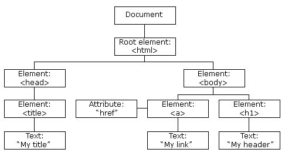
4.2 Поиск элементов на странице
| Метод | Что делает | Пример |
|---|---|---|
getElementById | Ищет элемент по id | document.getElementById("header") |
querySelector | Ищет первый элемент по CSS-селектору | document.querySelector(".btn") |
querySelectorAll | Ищет все элементы | document.querySelectorAll("p") |
4.3 Изменение содержимого и стилей
Изменение содержимого:
Изменение стилей (CSS):
4.4 Работа с классами
| Метод | Действие | Пример |
|---|---|---|
classList.add() | Добавляет класс | element.classList.add("active") |
classList.remove() | Удаляет класс | element.classList.remove("hidden") |
classList.toggle() | Переключает класс | element.classList.toggle("visible") |
classList.contains() | Проверяет наличие класса | element.classList.contains("active") |
4.5 Обработка событий
Событие - действие пользователя: клик, наведение мыши, ввод текста, загрузка страницы.
Способ 1. Через свойство элемента:
Способ 2. Через addEventListener (современный стандарт):
4.6 Часто используемые типы событий
| Событие | Когда срабатывает |
|---|---|
click | Клик мышью |
input | Изменение текста в поле ввода |
submit | Отправка формы |
DOMContentLoaded | HTML-документ полностью загружен |
🎯 Вывод по лекции
Вы освоили работу с DOM (Document Object Model) — ключевому механизму, позволяющему JavaScript взаимодействовать с содержимым веб-страницы. Вы научились находить элементы с помощью методов getElementById, querySelector и querySelectorAll, изменять их содержимое и стили, управлять классами через classList, а также обрабатывать различные события (клики, ввод текста, отправку форм) с использованием addEventListener. Эти навыки дают возможность создавать динамические и интерактивные веб-страницы, которые реагируют на действия пользователя в реальном времени.
🌐 ПРАКТИКА 4: Работа с DOM и событиями
🎯 Цели практики:
- Научиться находить элементы на странице с помощью различных методов
- Освоить изменение содержимого и стилей элементов
- Научиться управлять классами через classList
- Освоить обработку различных событий
- Создавать интерактивные элементы на странице
📋 Задания:
- Создайте HTML-страницу с заголовком
<h1 id="title">Заголовок</h1>и кнопкой «Изменить». При нажатии на кнопку измените текст заголовка на «Новый заголовок» с помощью getElementById и textContent. - Создайте три абзаца с классом text. Используя querySelectorAll, измените цвет текста всех абзацев на синий и установите размер шрифта 18px.
- Создайте кнопку «Скрыть» и абзац текста. При нажатии на кнопку скрывайте абзац с помощью style.display = "none". Добавьте вторую кнопку «Показать», которая будет отображать абзац обратно.
- Создайте квадратный блок
<div>размером 100x100px с красным фоном. Добавьте кнопки «Увеличить» и «Уменьшить», которые будут изменять ширину и высоту блока на ±10px. Используйте style.width и style.height. - Создайте поле ввода и абзац. При вводе текста в поле (событие input) дублируйте введённый текст в абзац в реальном времени.
- Создайте кнопку «Добавить класс» и блок
<div class="box">Текст</div>. При нажатии на кнопку добавляйте блоку класс highlight (жёлтый фон и рамка). Создайте вторую кнопку «Удалить класс», которая удаляет этот класс. Используйте classList.add и classList.remove. - Создайте кнопку «Переключить» и блок текста. При каждом нажатии на кнопку переключайте класс hidden (свойство display: none). Используйте classList.toggle.
- Создайте список из 5 элементов
<ul>и кнопку «Проверить». При нажатии проверьте с помощью classList.contains, есть ли у третьего элемента списка класс active. Выведите результат в консоль (true/false). - Создайте форму с одним полем ввода и кнопкой «Отправить». При отправке формы предотвратите перезагрузку страницы (preventDefault) и выведите введённое значение в консоль.
- Создайте несколько кнопок с разными цветами (красный, зелёный, синий). При нажатии на кнопку меняйте фон страницы (body) на соответствующий цвет. Используйте style.backgroundColor.
- Создайте элемент
<img>и две кнопки «Увеличить» и «Уменьшить». При нажатии на кнопки меняйте ширину изображения на ±20px (минимальная ширина 50px, максимальная 400px). - Создайте кнопку, которая при нажатии выводит в консоль текущую дату и время (используйте объект new Date()).
- Создайте два абзаца с текстом. При нажатии на любой абзац его текст должен меняться на «Вы кликнули по этому абзацу!». Используйте один обработчик событий для обоих абзацев.
- Создайте поле ввода для ввода возраста. При потере фокуса полем (событие blur) проверяйте, что введённое значение является числом от 0 до 120. Если нет — выводите сообщение об ошибке под полем ввода.
- Создайте блок с текстом и кнопку «Скрыть через 2 секунды». При нажатии на кнопку текст должен исчезнуть через 2000 миллисекунд. Используйте setTimeout.
- Создайте на странице счётчик (число) и три кнопки: «+1», «-1», «Сброс». При нажатии на кнопки счётчик должен изменяться и отображаться на странице.
- Создайте выпадающий список (
<select>) с тремя вариантами цветов (красный, зелёный, синий). При изменении выбранного значения меняйте цвет фона страницы на выбранный цвет. - Создайте блок-карточку. При наведении курсора на карточку (событие mouseenter) меняйте её фоновый цвет на светло-серый. При убирании курсора (mouseleave) возвращайте исходный цвет.
- Создайте динамический список задач. Добавьте поле ввода и кнопку «Добавить». При нажатии на кнопку добавляйте новую задачу в список
<ul>. Каждая новая задача должна иметь кнопку «Удалить», при нажатии на которую задача удаляется из списка. - Создайте аккордеон: три заголовка
<h3>и три соответствующих блока с текстом (изначально скрытых). При клике на заголовок соответствующий блок текста должен показываться, а другие блоки — скрываться. - 🎁 Бонусное задание: Создайте игру «Угадай число». Программа генерирует случайное число от 1 до 100. Пользователь вводит число в поле и нажимает «Проверить». Выводите подсказки: «Загаданное число больше», «Загаданное число меньше» или «Поздравляю, вы угадали!». Считайте количество попыток.
⚛️ ЛЕКЦИЯ 6. ВВЕДЕНИЕ В REACT
- Суть React. Причины появления, основные концепции, преимущества
- Компонентный подход, виртуальная DOM
- JSX. Преимущества, взаимодействие с браузером, экосистема
5.1 Суть React. Причины появления
В начале 2010-х годов веб-разработка переживала переломный момент. Приложения становились сложнее: появились Gmail, Facebook, Twitter — интерфейсы, требовавшие постоянного обновления данных без перезагрузки страницы.
Главная проблема того времени - работа с DOM (Document Object Model). Разработчики писали императивный код на чистом JavaScript или jQuery, который напрямую манипулировал элементами страницы. Это работало, но имело серьезные недостатки:
- Сложность синхронизации. Если данные менялись в нескольких местах, нужно было найти все элементы на странице, которые отображают эти данные, и обновить их вручную. Для сложных интерфейсов это превращалось в лабиринт взаимосвязей.
- Непредсказуемость. Изменение одного элемента могло случайно сломать другой, так как код был тесно связан.
- Низкая производительность. Частые прямые манипуляции DOM (которая сама по себе является тяжелой структурой) приводили к тормозам.
Для решения этих проблем инженером-программистом Facebook Джорданом Уолке был создан React - библиотека, которая занимается только рендерингом интерфейса и реакцией на действия пользователя.
5.2 Основные принципы React
- Декларативность. Программист указывает React, что хочет видеть на экране, а React сам вычисляет, как обновить DOM, чтобы достичь этого состояния.
- Компонентность. Интерфейс разбивается на изолированные, переиспользуемые блоки - компоненты.
- Многозадачность. React можно использовать не только для веба (ReactDOM), но и для мобильной разработки (React Native), и даже для VR (React 360).
5.3 Виртуальная DOM и компонентный подход
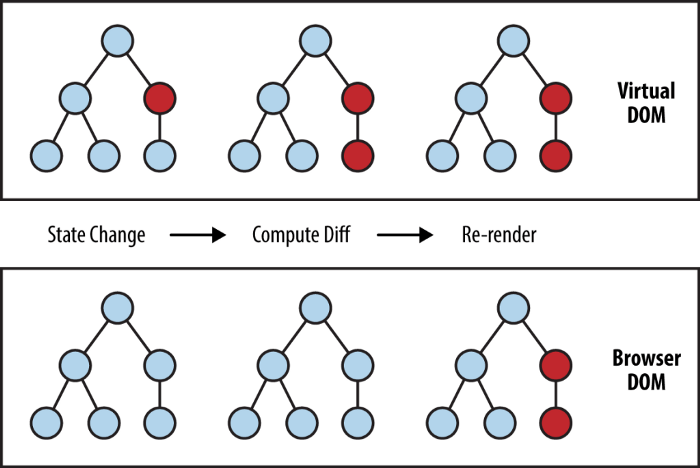
Это главная технологическая инновация, обеспечивающая работу React. Виртуальная DOM - легковесная JavaScript-копия реальной DOM. Она представляет собой просто дерево JavaScript-объектов, описывающих структуру интерфейса.
Как это работает (пошагово):
- Когда состояние приложения меняется, React сначала обновляет не реальную DOM, а виртуальную. Это происходит очень быстро.
- Затем React запускает процесс сравнения (Reconciliation). Он берёт старую версию виртуальной DOM и новую, и вычисляет, что именно изменилось.
- После того как различия найдены, React формирует список минимально необходимых изменений и применяет их к реальной DOM одним пакетом (batch update).
В React весь интерфейс - это дерево компонентов. Компонент - это независимый, изолированный строительный блок, который отвечает за отображение какой-то части экрана.
5.4 JSX. Преимущества
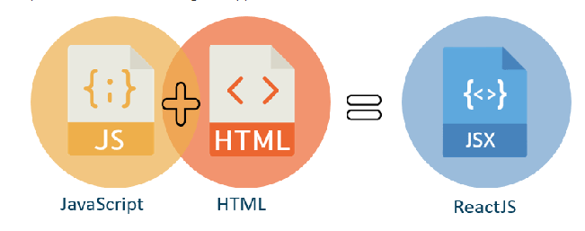
Когда вы пишете код на React, вы постоянно сталкиваетесь с конструкцией, похожей на HTML, но находящейся внутри JavaScript. Это JSX (JavaScript XML).
Преимущества JSX:
- Знакомый синтаксис. Для верстальщиков и разработчиков переход с HTML на JSX практически незаметен.
- Наглядность. Код, написанный на JSX, гораздо легче читать и понимать структуру интерфейса.
- Безопасность. JSX включает встроенную защиту от XSS-атак. Все данные, вставленные в фигурных скобках, экранируются перед рендерингом.
Код на JSX не понимает браузер напрямую. На этапе сборки проекта специальные инструменты (транспиляторы, например, Babel или встроенные возможности Vite) преобразуют JSX в обычные вызовы React.createElement.
🎯 Вывод по лекции
Вы познакомились с React — современной библиотекой для создания пользовательских интерфейсов, которая решает проблемы производительности и сложности синхронизации при работе с DOM. Вы изучили ключевые концепции React: компонентный подход, виртуальную DOM, декларативный стиль программирования и синтаксис JSX. Эти знания закладывают основу для разработки масштабируемых, производительных и поддерживаемых веб-приложений.
⚛️ ПРАКТИКА 5: Введение в React
🎯 Цели практики:
- Научиться создавать React-приложение
- Освоить создание функциональных компонентов
- Понять принцип композиции компонентов
- Научиться передавать данные через props
- Освоить синтаксис JSX
Создайте новый React-проект для выполнения заданий:
npm create vite@latest practice-5 -- --template reactcd practice-5npm run dev
📋 Задания:
- В файле App.js создайте функциональный компонент, который возвращает заголовок
<h1>с текстом «Моё первое React-приложение». Отобразите приложение на странице. - Создайте компонент Greeting, который принимает проп name и возвращает абзац с текстом «Привет, {name}!». Используйте этот компонент в App.js трижды с разными именами.
- Создайте компонент UserCard, который принимает пропсы: name (имя), age (возраст), city (город). Компонент должен отображать карточку пользователя. Вызовите компонент для трёх разных пользователей.
- Создайте компонент Button, который принимает пропсы: text (текст кнопки) и color (цвет фона). Кнопка должна иметь стиль: padding 10px 20px, border-radius 5px, цвет текста белый.
- Создайте компонент ProductCard для интернет-магазина. Он должен принимать: title (название товара), price (цена), image (URL картинки). Отобразите три карточки товаров на главной странице.
- Создайте компонент TodoList, который внутри себя содержит массив задач. Отобразите задачи в виде маркированного списка. Используйте метод map() для рендеринга списка.
- Добавьте в компонент TodoList условный рендеринг: если массив задач пуст, отображайте сообщение «Нет задач», если не пуст — отображайте список.
- Создайте компонент Alert, который принимает проп type (значения: success, error, warning) и message (текст сообщения). В зависимости от type компонент должен иметь разный цвет фона.
- Создайте компонент Profile, который отображает информацию о пользователе (имя, аватар, био). Аватар — это изображение, переданное через проп avatarUrl.
- Создайте компонент Card с пропом children. Внутри Card должна быть рамка, тень, скругление углов и внутренние отступы.
- Создайте компонент Header (шапка сайта с логотипом и навигацией), компонент Footer и компонент Layout, который объединяет Header, children и Footer.
- Создайте компонент StarRating, который принимает проп rating (число от 1 до 5). Компонент должен отображать звёздочки: ★ (заполненная) и ☆ (пустая).
- Создайте компонент ProgressBar, который принимает проп percentage (число от 0 до 100). Компонент должен отображать полосу прогресса.
- Создайте компонент NewsList, который получает через проп articles массив новостей. Отобразите все новости в виде карточек.
- Создайте компонент MenuItem и компонент Navigation, который принимает массив пунктов меню и отображает их горизонтально.
- Создайте компонент SocialIcon, который принимает проп platform и отображает соответствующую иконку.
- Создайте компонент Badge, который принимает проп count (число уведомлений). Если count > 0, отображается красный кружок с числом.
- Создайте компонент Tabs, который принимает массив вкладок. По умолчанию активна первая вкладка.
- Создайте компонент Modal, который принимает проп isOpen и onClose. Внутри модального окна отображайте children.
- Создайте компонент ThemeButton, который отображает кнопку с текстом «Тёмная тема» или «Светлая тема» в зависимости от текущего режима.
- 🎁 Бонусное задание: Создайте полноценную страницу-портфолио, используя минимум 8 различных компонентов.
🔄 ЛЕКЦИЯ 7. РАЗРАБОТКА НА REACT: СОСТОЯНИЕ, ЭФФЕКТЫ, МАРШРУТИЗАЦИЯ
- Состояние компонента и хуки
- Хук useState - управление данными
- Хук useEffect - работа с побочными эффектами
- Маршрутизация в React (React Router)
- Управление формами и вводом пользователя
- Подъём состояния и обмен данными между компонентами
6.1 Состояние компонента и хуки
В предыдущей лекции мы рассмотрели функциональные компоненты, которые просто принимают входные данные (props) и возвращают разметку. Такие компоненты называются статическими. Однако реальные приложения требуют динамики.
Состояние (state) - это данные, которые: хранятся внутри компонента, могут меняться во время работы приложения, при изменении автоматически вызывают перерисовку компонента.
Хуки (hooks) - это специальные функции, которые позволяют «подключиться» к возможностям React из функциональных компонентов.
6.2 Хук useState - управление данными
useState - самый распространённый хук. Он позволяет добавить состояние в функциональный компонент.
Синтаксис: const [значение, функцияДляОбновления] = useState(начальноеЗначение);
6.3 Хук useEffect - работа с побочными эффектами
Побочные эффекты - это всё, что не относится непосредственно к рендерингу: запросы к серверу (API), работа с localStorage, установка таймеров.
Синтаксис:
6.4 Маршрутизация в React (React Router)
React Router DOM - стандарт для маршрутизации в React.
| Компонент | Назначение |
|---|---|
BrowserRouter | Оборачивает всё приложение |
Routes | Контейнер для маршрутов |
Route | Определяет путь и компонент |
Link | Аналог <a> без перезагрузки |
useParams | Получение параметров из URL |
useNavigate | Программный переход |
6.5 Управление формами и вводом пользователя
Формы в React обрабатываются иначе, чем в классическом HTML. Вместо того чтобы отправлять данные на сервер с перезагрузкой страницы, мы контролируем каждый ввод через состояние.
Контролируемые компоненты - значение поля ввода хранится в состоянии React и обновляется через onChange.
6.6 Подъём состояния (Lifting State Up)
В React данные обычно передаются сверху вниз - от родительского компонента к дочерним через props. Но что делать, если несколько дочерних компонентов нуждаются в одних и тех же данных?
Решение: поднять состояние на уровень выше - в общего родителя. Родитель будет хранить состояние и передавать его дочерним компонентам через props.
🎯 Вывод по лекции
Вы изучили ключевые инструменты React для создания динамических приложений - хуки useState (управление состоянием компонента) и useEffect (выполнение побочных эффектов). Вы освоили маршрутизацию с помощью React Router, что позволяет создавать многостраничные приложения без перезагрузки страницы, а также научились управлять формами и поднимать состояние для обмена данными между компонентами. Эти навыки являются завершающим этапом в изучении основ React.
🔄 ПРАКТИКА 6: React - Хуки и маршрутизация
🎯 Цели практики:
- Научиться создавать React-компоненты с использованием состояния
- Освоить хуки useState и useEffect
- Научиться работать с формами в React
- Освоить маршрутизацию с React Router
- Научиться поднимать состояние между компонентами
Перед выполнением заданий создайте новый React-проект:
npm create vite@latest practice-6 -- --template reactcd practice-6npm install react-router-domnpm run dev
📋 Задания на useState (1-6)
- Создайте компонент Counter с тремя кнопками: «+1», «-1», «Сброс». Используйте useState для хранения счётчика.
- Создайте компонент ToggleText. При нажатии на кнопку «Показать/Скрыть» текст «Привет, мир!» должен появляться или исчезать.
- Создайте компонент ColorPicker. Создайте три кнопки с названиями цветов. При нажатии на кнопку фон компонента должен менять цвет.
- Создайте компонент TodoInput. Добавьте поле ввода и кнопку «Добавить». При нажатии на кнопку добавляйте текст из поля ввода в массив.
- Создайте компонент UserCard с состоянием isEdited. В режиме просмотра отображаются имя и возраст. При нажатии «Редактировать» появляются поля ввода.
- Создайте компонент TemperatureConverter. Добавьте поле для ввода градусов Цельсия. Автоматически вычисляйте и отображайте значение в Фаренгейтах.
📋 Задания на useEffect (7-11)
- Создайте компонент DocumentTitleUpdater. Добавьте поле ввода текста. При каждом изменении текста заголовок документа должен меняться.
- Создайте компонент Timer. Он должен отображать количество секунд, прошедших с момента загрузки компонента.
- Создайте компонент WindowWidth. Он должен отображать текущую ширину окна браузера.
- Создайте компонент PostFetcher. При первом рендере компонент должен загружать данные с API и отображать заголовок и содержимое поста.
- Создайте компонент LocalStorageSaver. Добавьте поле ввода текста. При каждом изменении текста сохраняйте его в localStorage.
📋 Задания на формы (12-14)
- Создайте компонент RegistrationForm с полями: имя, email, пароль. При отправке формы выведите в консоль объект с данными.
- Создайте компонент MultiStepForm с двумя шагами. Шаг 1: имя и возраст. Шаг 2: город и профессия.
- Создайте компонент ShoppingList. Добавьте форму для добавления продукта. При добавлении продукт появляется в списке.
📋 Задания на React Router (15-18)
- Создайте приложение с тремя страницами: «Главная», «О нас», «Контакты». Используйте BrowserRouter, Routes, Route и Link.
- Добавьте к приложению компонент NotFound для отображения страницы 404. Используйте path="*" в Route.
- Создайте компонент ProfilePage, который принимает параметр username из URL. Используйте хук useParams.
- Создайте приложение-блог. На главной странице отображаются заголовки постов. При клике на заголовок открывается страница поста.
📋 Задания на подъём состояния (19-20)
- Создайте компонент родителя ParentComponent и два дочерних компонента: ChildA (поле ввода) и ChildB (отображение текста). Состояние хранится в родителе.
- Создайте приложение «Список задач» (To-Do List) со следующими возможностями: добавление новой задачи, отметка задачи как выполненной, удаление задачи, фильтр задач.
- 🎁 Бонусное задание: Добавьте в приложение «Список задач» сохранение задач в localStorage с помощью useEffect.
📚 ПРОЕКТ 1: Интернет-магазин книг
🎯 Цель:
Создать полноценный веб-сайт интернет-магазина, используя HTML, CSS и JavaScript.
📋 Задания:
- Создайте HTML-документ с правильной структурой. В секции
<head>укажите кодировку UTF-8, viewport для адаптивности и заголовок страницы «Книжный магазин». - Подключите внешний CSS-файл (styles.css) и внешний JavaScript-файл (script.js).
- Создайте шапку сайта (
<header>) с логотипом и навигационным меню: «Главная», «Каталог», «Корзина», «Контакты». - В навигации используйте ссылки-якоря для перемещения по странице. Добавьте ссылку «Наверх» внизу страницы.
- Создайте главный баннер с заголовком
<h1>«Добро пожаловать в Книжный магазин» и кнопкой «Перейти в каталог». - В разделе «Каталог» создайте 6 карточек книг. Каждая карточка должна содержать: изображение, название, автора, цену и кнопку «В корзину».
- Для карточек используйте CSS-свойства: border, border-radius, box-shadow, padding, margin. Карточки должны располагаться в 3 колонки на десктопе и в 1 колонку на мобильных устройствах.
- Используя селекторы по классу, задайте стили для карточек: при наведении (:hover) карточка должна увеличиваться в размере и менять цвет тени.
- Создайте секцию «Корзина» с таблицей. Таблица должна содержать столбцы: «Название», «Цена», «Количество», «Сумма», «Действие».
- Заполните таблицу 3 строками с примерами книг. Добавьте строку с итоговой суммой, используя colspan.
- Создайте форму «Оформление заказа» с полями: имя, email, телефон, адрес, способ доставки, согласие на обработку данных.
- Добавьте валидацию формы на JavaScript: все поля должны быть заполнены, email должен содержать @, телефон должен содержать только цифры.
- При успешной отправке формы выводите всплывающее окно с сообщением «Заказ оформлен!» и очищайте все поля формы.
- Создайте массив books в JavaScript из 6 объектов. Динамически сгенерируйте карточки товаров из этого массива при загрузке страницы.
- Реализуйте функцию добавления товара в корзину: при клике на кнопку «В корзину» книга добавляется в массив cart.
- Реализуйте функцию удаления товара из корзины: в каждой строке таблицы есть кнопка «Удалить».
- Реализуйте функцию изменения количества товара в корзине. При изменении количества автоматически пересчитывается сумма.
- Добавьте фильтрацию товаров в каталоге: три кнопки «Все», «До 500 руб.», «От 500 руб.».
- Создайте кнопку «Переключить тему» (светлая/тёмная). При нажатии на кнопку класс
<body>меняется. - Сохраняйте содержимое корзины в localStorage. При перезагрузке страницы корзина должна восстанавливаться.
✅ Проект выполнен и задеплоен!
Посмотрите работающий сайт:
🚀 Открыть Книжный магазин📂 GitHub: gotsevdaniil0-hub/bookstore
💪 ПРОЕКТ 2: Фитнес-трекер на React
🎯 Цель:
Создать полноценное React-приложение для отслеживания тренировок с использованием состояния, эффектов, маршрутизации и форм.
npm create vite@latest fitness-tracker -- --template reactcd fitness-trackernpm install react-router-domnpm run dev
📋 Задания:
- Очистите шаблон App.jsx и создайте структуру папок: components/, pages/, styles/, utils/.
- Создайте компонент Header с навигацией (Главная, Тренировки, Статистика, Профиль). Используйте Link из react-router-dom.
- Создайте компонент Footer с копирайтом и ссылками на социальные сети.
- Настройте маршрутизацию в App.jsx: маршруты для страниц HomePage, WorkoutsPage, StatisticsPage, ProfilePage.
- На странице HomePage создайте приветственный баннер с заголовком и кнопкой «Начать тренировку».
- Создайте состояние workouts (массив тренировок) в компоненте App и передайте его через props дочерним страницам.
- На странице WorkoutsPage отобразите список тренировок в виде карточек. Используйте метод map() для рендеринга.
- Создайте форму добавления тренировки (компонент WorkoutForm) на странице тренировок.
- Реализуйте добавление новой тренировки в массив workouts. При отправке формы создавайте объект с уникальным id.
- Реализуйте удаление тренировки: каждая карточка имеет кнопку «Удалить».
- Реализуйте редактирование тренировки: при нажатии на карточку открывается форма с предзаполненными данными.
- Используя useEffect, сохраняйте массив workouts в localStorage при каждом изменении.
- На странице StatisticsPage создайте компонент Statistics и отобразите статистику: общее количество тренировок, общая длительность, калории.
- Используя подъём состояния, создайте фильтр тренировок на странице WorkoutsPage по типу.
- На странице ProfilePage создайте форму для редактирования профиля пользователя.
- Сохраняйте данные профиля в localStorage и восстанавливайте их при загрузке страницы.
- Добавьте на страницу статистики график, показывающий калории по дням.
- Создайте компонент WorkoutChart, который отображает недельный прогресс.
- Добавьте валидацию формы добавления тренировки: длительность и калории должны быть положительными числами.
- Реализуйте экспорт тренировок в JSON: добавьте кнопку «Экспорт» на страницу тренировок.
- 🎁 Бонусное задание: Добавьте возможность отмечать тренировку как выполненную. На странице статистики отображайте процент выполненных тренировок.
✅ Проект выполнен и задеплоен!
Запустите фитнес-трекер в браузере:
💪 Открыть Фитнес-трекер📂 GitHub: gotsevdaniil0-hub/fitness-tracker
📝 ПРОВЕРКА ЗНАНИЙ
70 вопросов (10 на каждую тему). Типы: один вариант, несколько вариантов, ввод текста, сопоставление. Вопросы перемешиваются при каждом запуске.